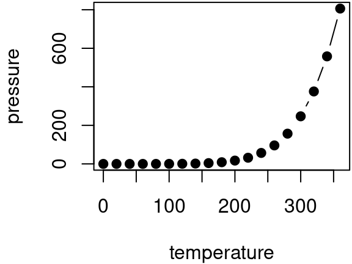

Chapter 10 tables
10.1 how to make tables
You can label chapter and section titles using {#label} after them, e.g., we can reference Chapter 10. If you do not manually label them, there will be automatic labels anyway, e.g., Chapter ??.
Figures and tables with captions will be placed in figure and table environments, respectively.
par(mar = c(4, 4, .1, .1))
plot(pressure, type = 'b', pch = 19)

Figure 10.1: Here is a nice figure!
Reference a figure by its code chunk label with the fig: prefix, e.g., see Figure 10.1. Similarly, you can reference tables generated from knitr::kable(), e.g., see Table 10.1.
knitr::kable(
head(iris, 20), caption = 'Here is a nice table!',
booktabs = TRUE
)| Sepal.Length | Sepal.Width | Petal.Length | Petal.Width | Species |
|---|---|---|---|---|
| 5.1 | 3.5 | 1.4 | 0.2 | setosa |
| 4.9 | 3.0 | 1.4 | 0.2 | setosa |
| 4.7 | 3.2 | 1.3 | 0.2 | setosa |
| 4.6 | 3.1 | 1.5 | 0.2 | setosa |
| 5.0 | 3.6 | 1.4 | 0.2 | setosa |
| 5.4 | 3.9 | 1.7 | 0.4 | setosa |
| 4.6 | 3.4 | 1.4 | 0.3 | setosa |
| 5.0 | 3.4 | 1.5 | 0.2 | setosa |
| 4.4 | 2.9 | 1.4 | 0.2 | setosa |
| 4.9 | 3.1 | 1.5 | 0.1 | setosa |
| 5.4 | 3.7 | 1.5 | 0.2 | setosa |
| 4.8 | 3.4 | 1.6 | 0.2 | setosa |
| 4.8 | 3.0 | 1.4 | 0.1 | setosa |
| 4.3 | 3.0 | 1.1 | 0.1 | setosa |
| 5.8 | 4.0 | 1.2 | 0.2 | setosa |
| 5.7 | 4.4 | 1.5 | 0.4 | setosa |
| 5.4 | 3.9 | 1.3 | 0.4 | setosa |
| 5.1 | 3.5 | 1.4 | 0.3 | setosa |
| 5.7 | 3.8 | 1.7 | 0.3 | setosa |
| 5.1 | 3.8 | 1.5 | 0.3 | setosa |
You can write citations, too. For example, we are using the bookdown package (Xie 2021) in this sample book, which was built on top of R Markdown and knitr (Xie 2015).
References
Xie, Yihui. 2015. Dynamic Documents with R and Knitr. 2nd ed. Boca Raton, Florida: Chapman; Hall/CRC. http://yihui.name/knitr/.
———. 2021. Bookdown: Authoring Books and Technical Documents with r Markdown. https://CRAN.R-project.org/package=bookdown.